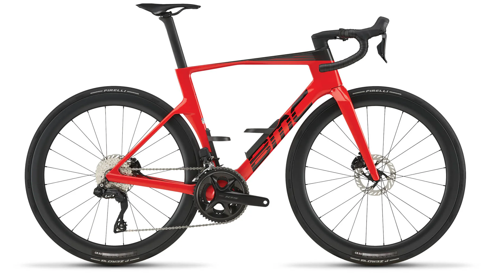

BMC Teammachine R 01 Five

9.200 CHF
Race-orientiertes Topmodell mit aggressiver Geometrie und Aero-Laufrädern.
Die tiefe Front und der steife Carbon-Rahmen sorgen für eine sehr direkte Kraftübertragung bei Antritten und Sprints. Zusammen mit der hochwertigen Renn-Ausstattung ist dieses Bike auf maximale Performance im Renneinsatz und bei sehr hohem Tempo ausgelegt.